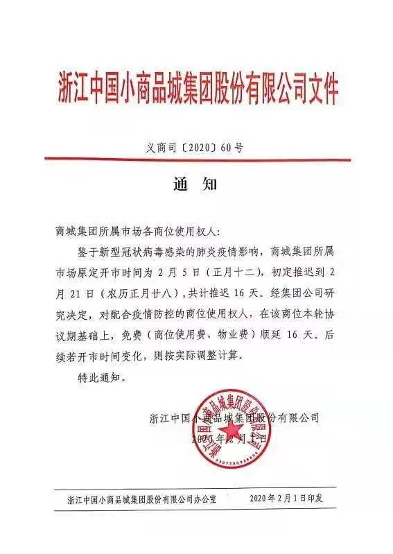

肺炎日记 | 1月29日：北京警示疫情扩散 社区是防疫第二战场
原文链接 备份链接 【财新网】（记者 黄蕙昭 综合）新冠肺炎疫情发展呈现新形势：当湖北省新冠肺炎防控战仍处攻坚时期时，其它省市的肺炎防控压力也在增大，如北京等地聚集性病例、本地二代病例增多，疫情面临从输入性向扩散性过渡的潜在挑战。 1 …
文中图片来源：受访者提供
经济观察网 记者 高飞昌 就在很多人为返京后能不能正常入住小区或村子而发愁时，1月31日，家住浙江义乌的刘先生在微信朋友圈分享了一个手机短信截图，足以让很多人“羡慕”。
该条短信截图的文字内容显示如下。发信者：之前和你电话联系，你已同意疫情期间不回义乌，请你信守承诺，疫情结束后回来，收到后请回（疫情结束回义乌）可凭短信内回复记录带上身份证到四季社区领取500元的补助。收信者：疫情结束回义乌。

义乌劝外来人员缓返手机短信
据刘先生介绍，这是义乌市相关社区的工作人员发给该社区外地租户的短信，“内容属实，是义乌市政府带领下，各方面共同商讨决定的”。经济观察网记者为进一步了解信息，查询了当地的相关网站，发现义乌市在新冠肺炎疫情防控方面确有很多举措，给外来人员发放补助只是其中一个措施。
浙江当地媒体“浙江新闻”2月1日发布的新闻原文中显示：“在义乌市委市政府积极引导下，企业、群众纷纷支持响应，发动各种关系劝导疫区及重点地区人员延缓来义，对企业劝导成功按每人每月补贴500元。”
记者还发现，1月31日，有一个非官方的“倡议书”在义乌当地民众的微信圈中流传，其中显示“抗击肺炎，我们重义轻利，不丢义乌人的脸面，在疫情没有结束之前，愿意给予房租减免！”，倡议人是义乌市稠江街道11个村民委员会。该文件附有这些倡议人的红色盖章。

义乌社区房东免租金倡议书
据了解，浙江省义乌市是全国知名的“小商品之都”，具有外来人口众多、流动性强的特点，面对疫情和春节返程高峰的叠加因素，当地疫情防控形势严峻。对此义乌市加大了对外来人员的排查和登记，据当地近来的摸排统计，仅湖北籍流动人口登记数就有54900人。针对外来人员，义乌实施了包括隔离、劝返、发补贴、免租等在内的多重防控措施。
这些措施都是在义乌市政府的强力防控布局下全面展开的。经济观察网记者从义乌市人民政府官方网站看到，该市针对疫情已经连发9道“冠状病毒肺炎”防控指挥部令，涉及方方面面，包括公共交通停运、各类封闭场所关闭、保障物资供应、复工时间延长等等。
实际上，全国范围内有很多大中城市都面临外来人口返程与疫情防控双重压力，但是在针对外来人员返程问题上的应对措施不一。据经济观察网此前的报道，目前在北京，有多个社区出现拒绝外地返京人员入住、导致返京人员无处居住的现象，目前还没有完美的解决方案。1月31日，北京市政府发文指出，必需行业以外的企业2月9日24时前灵活安排工作。
而浙江、上海、广东等地更早时候就发布了各企业延迟至2月9日复工的决定，且不少地方有对商户、对外来人员免租的政策。截稿前，记者又看到，2月1日，浙江中国小商品城集团股份有限公司发布了针对集团所属市场商位使用权人的通知，提到原定开市时间2月5日，初定推迟到2月21日，推迟16天，且推迟期间商位使用费、物业费免费。

义乌小商品城免租通知
版权声明：以上内容为《经济观察报》社原创作品，版权归《经济观察报》社所有。未经《经济观察报》社授权，严禁转载或镜像，否则将依法追究相关行为主体的法律责任。版权合作请致电：【010-60910566-1260】。
原文链接 备份链接 【财新网】（记者 黄蕙昭 综合）新冠肺炎疫情发展呈现新形势：当湖北省新冠肺炎防控战仍处攻坚时期时，其它省市的肺炎防控压力也在增大，如北京等地聚集性病例、本地二代病例增多，疫情面临从输入性向扩散性过渡的潜在挑战。 1 …
原文链接 备份链接 开启更有意思的武汉！请点击上方优良better →点击右上角“…” → “设为星标 ” 1月26日，湖北省人民政府新闻发布会上，武汉市长周先旺戴着口罩，疲惫地说出：“因春节因素和疫情因素，大约有500多万 …
原文链接 备份链接 非常时期，武汉成了全国人民挂念、祈福的城市。封城后，武汉人民的真实生活是什么样？ 正和岛自1月26日起特别推出《叶青：我在武汉疫区的第N天》专栏。叶青是一位定居武汉40年的市民，也是一名学者和官员。接下来的一段时间，他 …
原文链接 备份链接 因疫情防控和延迟复工，从乡村到城市的流动人口暂时大量减少，身处疫情防控第一道防线的各地基层普遍存在防护物资和人手不足问题。严重疫情挑战能否成为真正建立分级诊疗体系的一个重要机遇？ 文 | 《财经》记者 王丽娜 辛颖 孙 …
原文链接 备份链接 【财新网】（记者 周东旭 整理）新冠肺炎疫情还在蔓延，防控任务依然艰巨。重疫区湖北黄冈升级管控举措，从2月1日起，严格控制市区居民出行。每户家庭每两天可指派1人上街采购生活物资，其他人员除生病就医、疫情防控工作需要、在 …